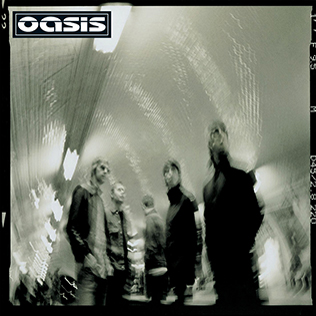

Heathen Chemistry (2002)

Release Date: July 1, 2002
"Heathen Chemistry" saw Oasis returning to a more straightforward rock sound, reminiscent of their earlier work, while also incorporating contributions from all band members for the first time in songwriting. The album produced successful singles like "The Hindu Times," "Stop Crying Your Heart Out," and "Little by Little."
It was generally well-received by fans and critics, who appreciated its more direct approach and strong melodies. "Heathen Chemistry" helped re-establish Oasis's presence in the charts and solidified their enduring appeal.
Track List:
- The Hindu Times
- Force of Nature
- Hung in a Bad Place
- Stop Crying Your Heart Out
- Songbird
- Little by Little
- A Quick Peep
- (Probably) All in the Mind
- She Is Love
- Born on a Different Cloud
- Better Man